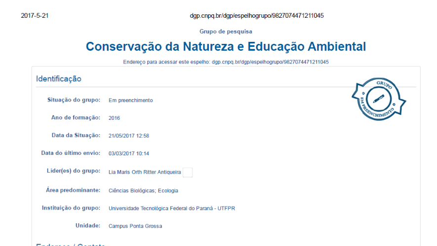
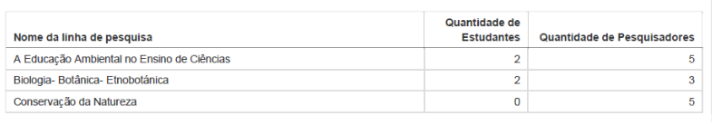
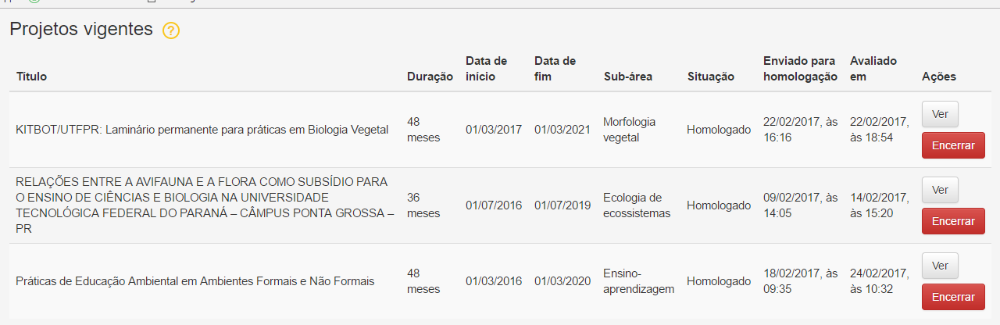
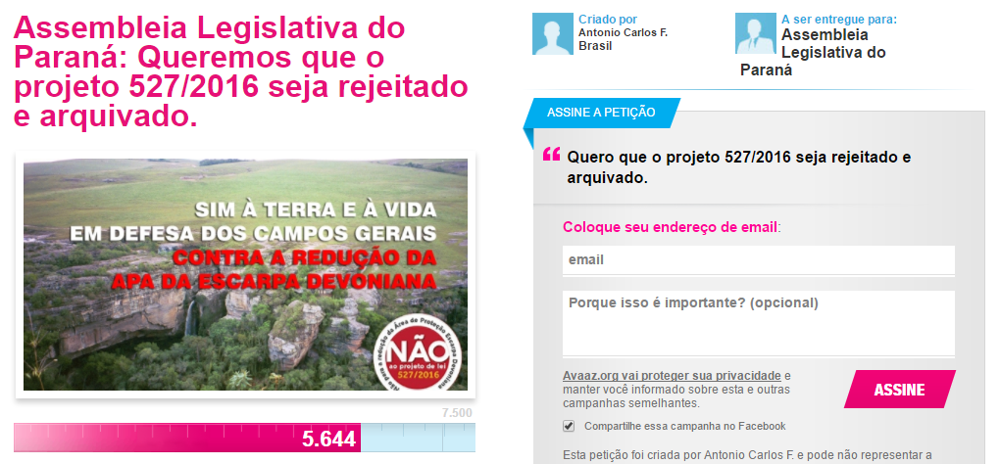

O grupo de pesquisa CONEA – Conservação da Natureza e Educação Ambiental foi criado no ano de 2016, com objetivo de congregar estudantes e pesquisadores interessados pela temática. Foi proposto pela professora Dra. Lia Maris Orth Ritter Antiqueira e certificado pela UTFPR no diretório de grupos de pesquisa do CNPq.
Os trabalhos foram iniciados com a participação de uma pesquisadora colaboradora e duas alunas de iniciação científica voluntária, do curso de Licenciatura Interdisciplinar em Ciências Naturais da UTFPR/Ponta Grossa. Foram propostas inicialmente 3 linhas de pesquisa.
O grupo iniciou seus trabalhos com 3 projetos voluntários homologados no sistema de Gestão de Projetos de Pesquisa e Inovação da UTFPR (PDTI).
A proposta inicial do grupo foi de propor reuniões semanais com os voluntários para orientação dos projetos de pesquisa, bem como discussão de temas relevantes e proposição de novas ideias.
Este caderno de memórias resgata todas as atividades realizadas pelo grupo, eventos, resultados de pesquisa apresentados e publicados, além do registro fotográfico da construção do grupo e de sua identidade.
No mês de fevereiro de 2017 o grupo foi convidado a participar do debate envolvendo o projeto de lei 527/2016 que prevê a redução da APA da Escarpa Devoniana.
A primeira ação foi participação em uma gravação junto com pesquisadores da UEPG e equipe do Paraná TV, cujo resultado foi veiculado no telejornal do dia 03 de março de 2017.
Vídeo pode ser visto clicando no acima ou aqui.No dia 10 de março de 2017 o grupo participou da audiência pública promovida no Cine Ópera em Ponta Grossa, manifestando-se contra o projeto. Estiveram presentes autoridades políticas, sociedade civil, pesquisadores e ambientalistas de toda região dos Campos Gerais. O projeto de lei foi apresentado pelos proponentes e diversos setores colocaram seu posicionamento, que foi massivamente contra o projeto.
Um abaixo assinado protocolado por simpatizantes e divulgado pelo CONEA junto de outros grupos, atingiu rapidamente 5 mil assinaturas.
 Página pode ser vista clicando aqui.